Releasenotes eBlinqx Hypotheekadvies – April 2026
Releasenotes
📢 Live in eBlinqx Hypotheekadvies!
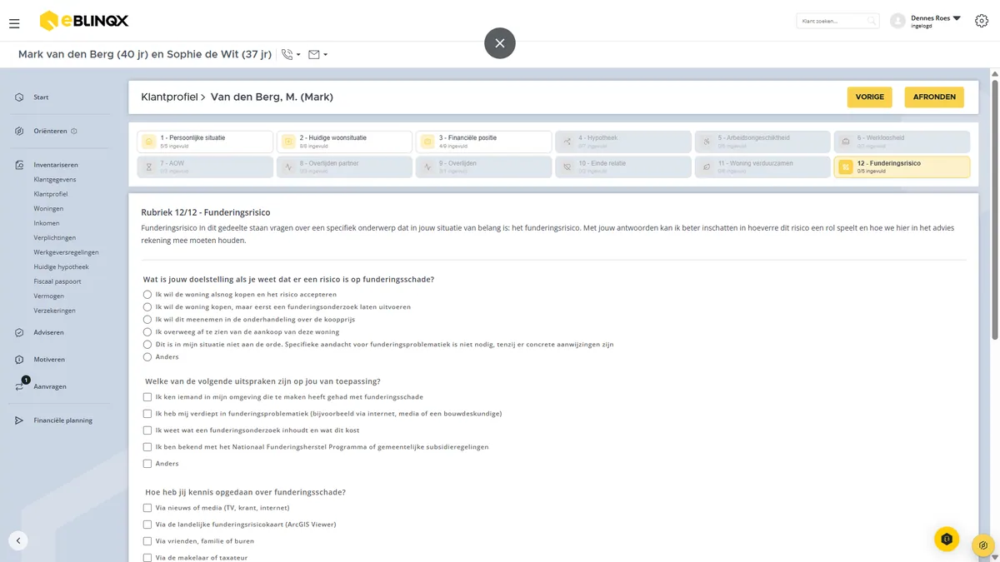
IT-30437 — Nieuw hoofdstuk Funderingsrisico in klantprofiel
Het klantprofiel is uitgebreid met hoofdstuk 12 Funderingsrisico. Je kunt nu expliciet inventariseren in hoeverre funderingsproblematiek een rol speelt in de situatie van de klant, inclusief doelstelling, bekendheid met het onderwerp en de gewenste vervolgstappen. Zo kun je dit risico gericht meenemen in het advies.
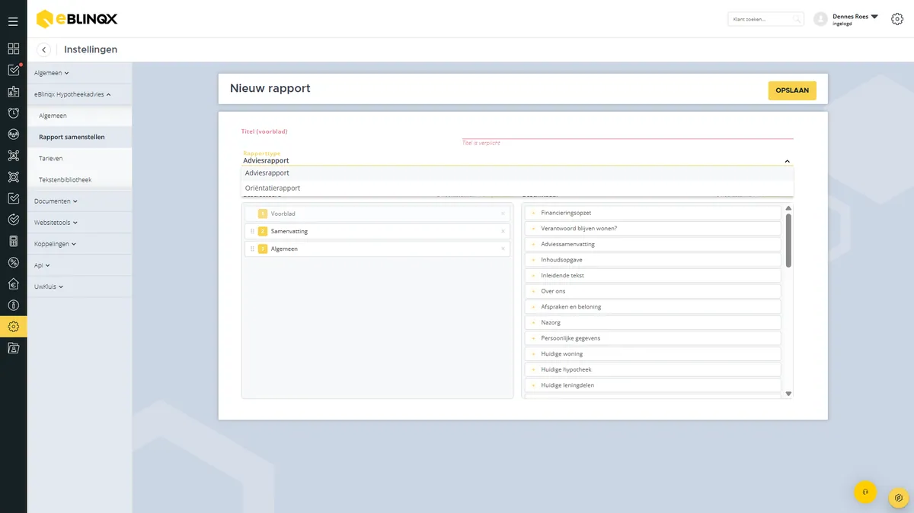
IT-30218 — Rapporttype en eigen titel op voorblad bij zelf samengestelde rapporten
Bij het zelf samenstellen van een rapport kun je nu kiezen tussen adviesrapport, oriëntatierapport of los document. Daarnaast wordt de titel die je zelf invoert nu als titel op het voorblad getoond, in plaats van de vaste standaardtekst ("Alsjeblieft, jullie persoonlijke adviesrapport"). Bestaande flows voor adviesrapporten blijven ongewijzigd werken.
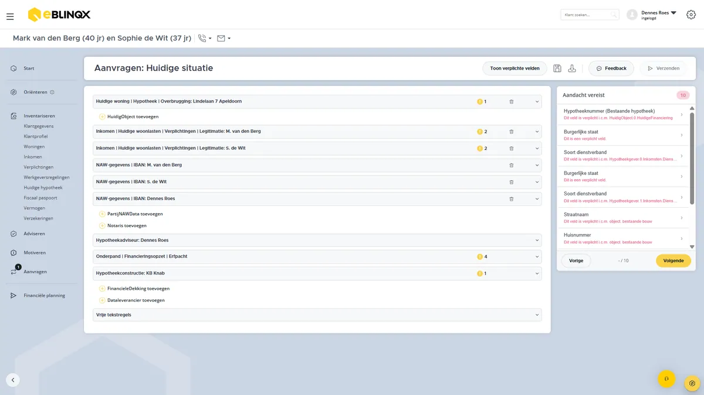
IT-30119 — HDN-Aanvragen: filter op verplichte velden
In het scherm HDN-Aanvragen is links naast de knop Feedback een filter toegevoegd met twee opties: Toon alle velden (standaard) en Toon alleen verplichte velden. De filterkeuze blijft binnen de sessie behouden en wordt direct client-side toegepast, zodat je bij complexe aanvragen sneller door de verplichte invoer heen loopt.

IT-28822 — Snelheidsverbetering HDN-formulier
De lokale validatie van het HDN-formulier is merkbaar sneller. De onderliggende XSD wordt nu een uur gecached, waardoor validate-calls die voorheen enkele seconden konden duren nu vrijwel direct resultaat geven.
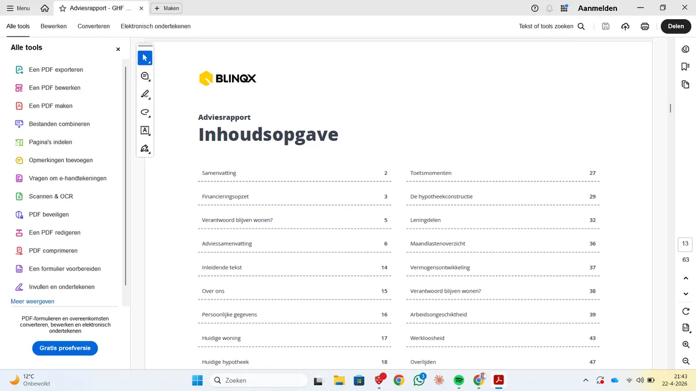
IT-30394 — PDF-service: inhoudsopgave, paginering en interne links
De PDF-service is verbeterd: de inhoudsopgave is netter, paginanummering is toegevoegd en interne links binnen het document werken nu correct. Daarmee zijn gegenereerde rapporten prettiger te navigeren.
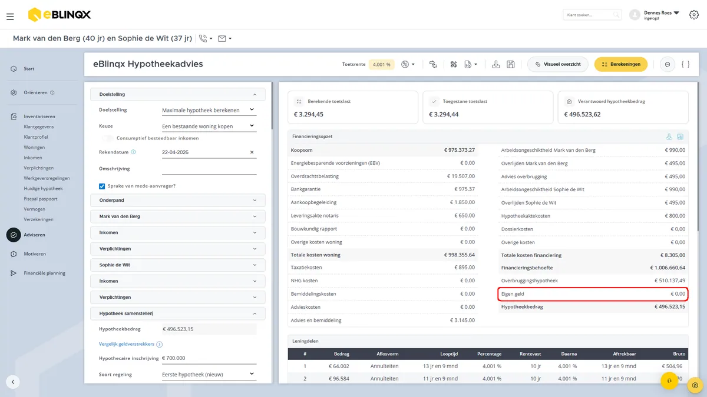
IT-29843 — Oriënteren: financierings- en verwervingskosten bij Maximale hypotheek berekenen
In een bestaand dossier met een bestaande hypotheek werden bij de doelstelling Maximale hypotheek berekenen de financieringskosten en de kosten ter verwerving van de woning onterecht onder eigen middelen geboekt. Deze kosten verhogen nu zoals bedoeld de financieringsbehoefte, waarbij overdrachtsbelasting over de koopsom correct meeloopt. De overbruggingshypotheek blijft het enige instrument om eigen middelen te sturen.
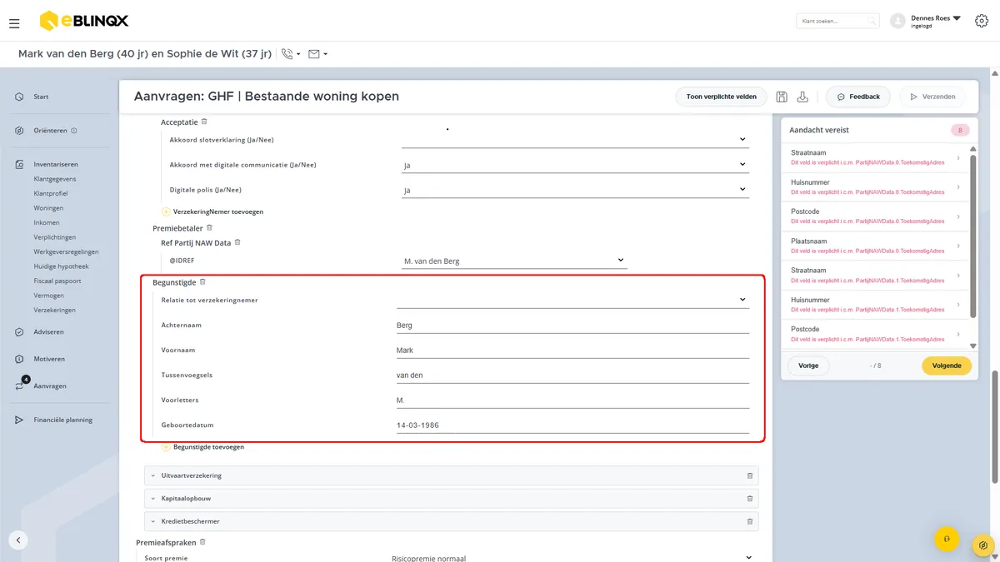
IT-29826 — Correcte begunstigde bij losse ORV-aanvraag
Bij een losse overlijdensrisicoverzekering waarin verzekerde en begunstigde verschillende personen zijn, werd de uitkering onterecht gekoppeld aan de verzekerde. De begunstigde die je expliciet in de ORV-configuratie opgeeft, wordt nu correct als uitkeringsgerechtigde opgeslagen en weergegeven.
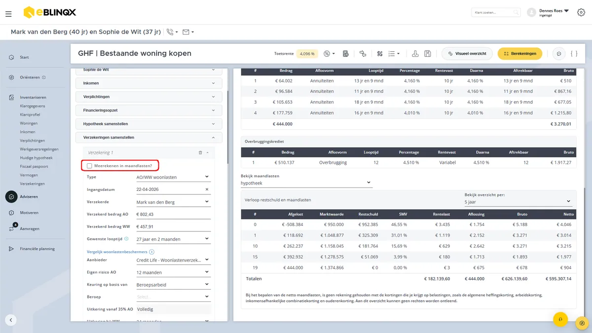
IT-28874 — Verzekeringspremies: checkboxkeuze nu persistent
Wanneer je de checkboxen voor verzekeringspremies in bruto/netto maandlasten uitvinkte en de berekening opsloeg, stonden ze bij heropenen weer aan. De keuze wordt nu in de backend bewaard en hersteld bij het openen van de berekening, zodat de maandlasten consistent blijven met jouw invoer.
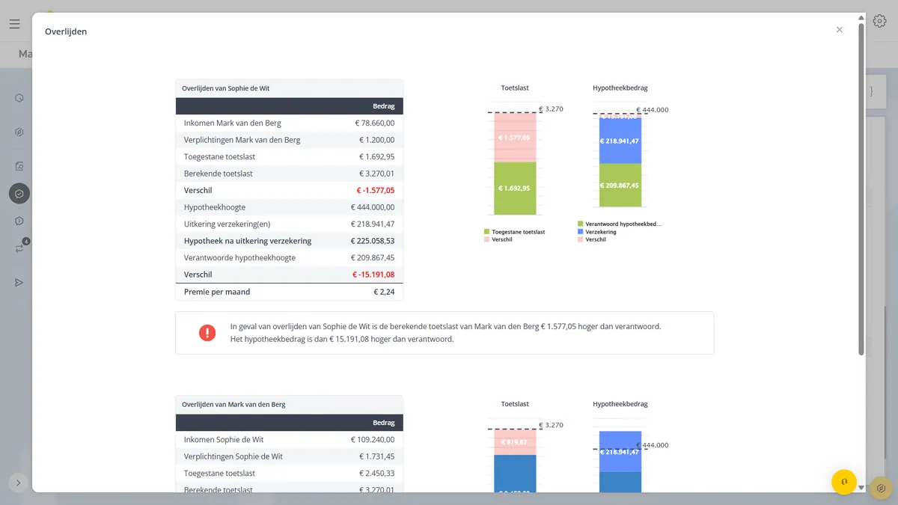
IT-28688 — GHF-advies: ORV alleen bij verplicht verzekerd bedrag (duo-dossier)
In duo-dossiers werd altijd een ORV-voorstel getoond, ook als uit de GHF-berekening geen verplicht verzekerd bedrag volgde. Dat leidde tot onlogische adviesoutput zoals "U heeft geen tekort, daarom adviseer ik u onderstaande verzekering." Nu geldt voor duo-dossiers: alleen een ORV-voorstel en premie-informatie als het verplicht verzekerd bedrag voor minimaal één persoon groter is dan 0. Voor alleenstaanden verandert er niets — daar blijft de volledige hypotheek als verzekerde som leidend.
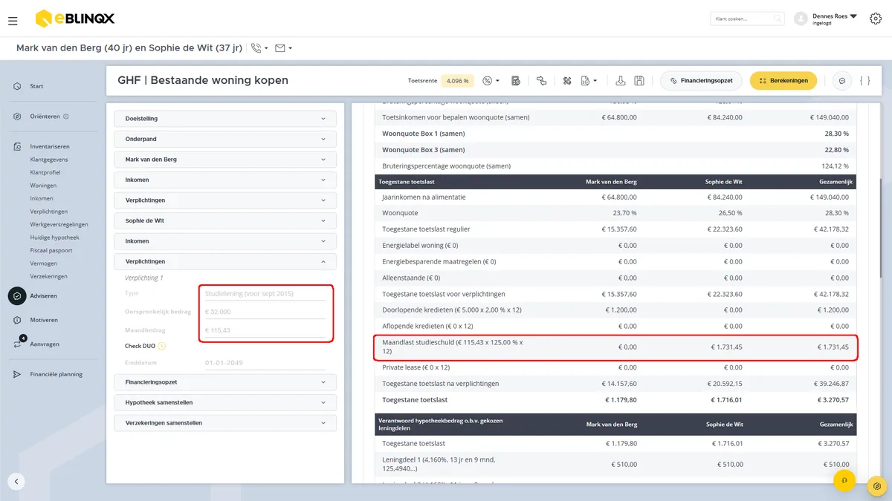
IT-30393 — Bruteringsfactor studieschuld bij toetsrente 4,001%
Bij een toetsrente van 4,001% werd factor 1,20 toegepast op de DUO-studieschuld, terwijl volgens de staffel (4,001% – 4,500%) factor 1,25 hoort. De maandlast van de studieschuld werd daardoor te laag berekend en de leencapaciteit te hoog. De mapping volgt nu exact de gedefinieerde ranges, inclusief de grenswaarden.
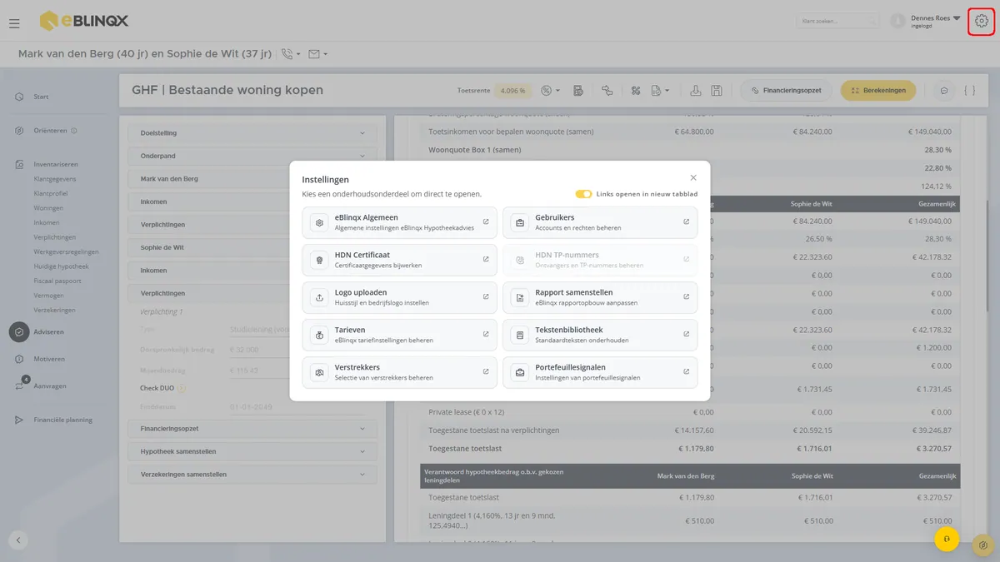
IT-30540 — Instellingen-popup opent weer vanuit een berekening
Klikken op het tandwiel bij Instellingen in een eBlinqx Hypotheek-berekening stuurde je terug naar het startscherm van PortefeuilleSignalen. Nu opent de instellingen-popup weer zoals bedoeld, zonder dat je de context van je actieve berekening verliest.
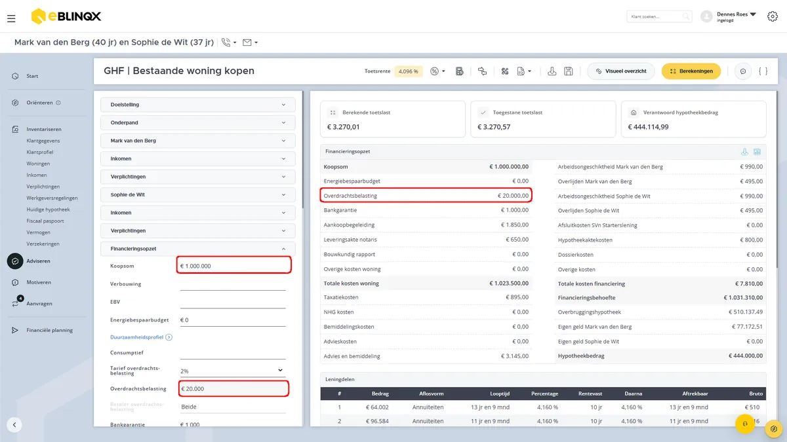
IT-30476 — Grondslag overdrachtsbelasting (koopsom vs. marktwaarde)
Het was niet altijd duidelijk welke waarde als grondslag diende voor de overdrachtsbelasting. De berekening gebruikt nu expliciet de hoogste waarde van koopsom en getaxeerde marktwaarde, conform de regels rond waarde in het economisch verkeer. Bij een afwijking tussen beide waarden krijg je een signalering.
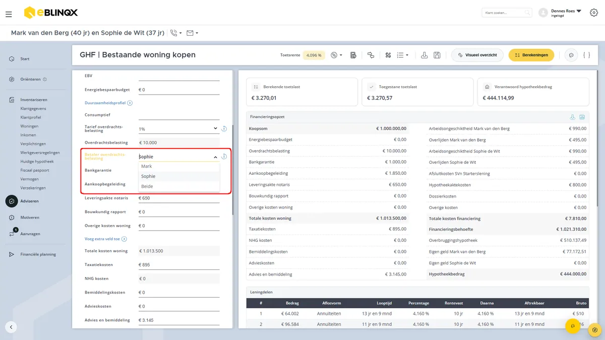
IT-28794 — 1% overdrachtsbelasting bij gemengd koperstype (starter + doorstromer)
Bij 1% overdrachtsbelasting in de financieringsopzet werd deze post naar rato over beide kopers verdeeld. Dit scenario doet zich echter alleen voor bij één starter en één doorstromer. Er is nu een extra regel in de financieringsopzet waarmee je expliciet aangeeft wie van beide kopers de overdrachtsbelasting draagt.
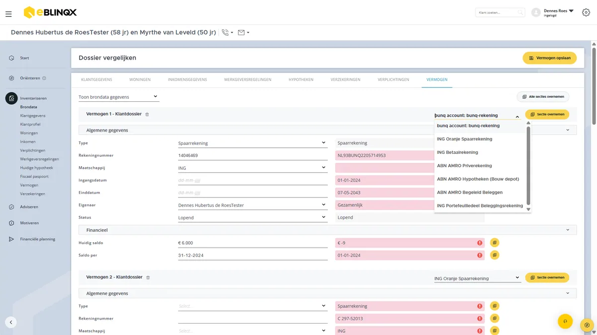
IT-30378 — Brondata-bevindingen verwerkt (DB-migratie)
Een reeks bevindingen rond Brondata is verwerkt. Belangrijkste verbeteringen onder andere:
- Ontbrekende velden opgelost: In eigendom sinds bij huidige woning en plaatsnaam bij (vorige) adressen.
- Eigendomsdatums tussen Ockto en GBA consistent gemaakt; herkomst van datums is duidelijker.
- Inkomen: pensioen en AOW worden duidelijker verwerkt, WW-uitkering wordt nu gemapt, onjuiste of ontbrekende inkomens-types in dropdowns zijn gecorrigeerd en onnodige lege inkomensvelden zijn opgeruimd.
- Vermogen: correcte classificatie betaal/spaar/belegging, saldo en "per"-datum worden getoond, en gezamenlijke (en/of) rekeningen worden nu herkend.
- Hypotheek wordt consistent aan het juiste eigendom gekoppeld (schuld volgt eigendom).
- Pensioenregeling wordt standaard geladen en dubbele regelingen in de UI zijn voorkomen.
- Documenten zijn logischer vindbaar; de browser-alert bij het verlaten van de pagina is vervangen door een custom melding; actieknoppen (sectie vs. pagina) zijn beter van elkaar te onderscheiden.
- Maatschappijnamen worden waar mogelijk automatisch gemapt; het veld Maatschappij naam is beschikbaar bij afwijkende invoer.
- Creditcard wordt correct geclassificeerd als doorlopend krediet.
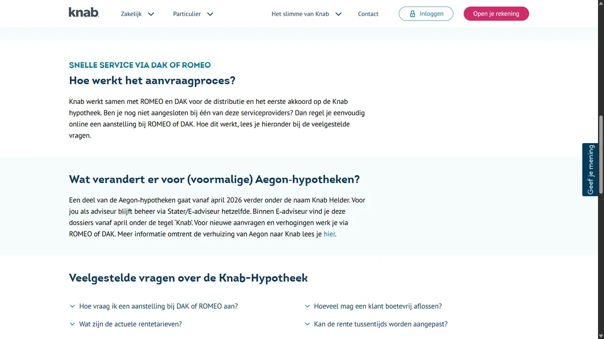
🆕 IT-30423: Knab Helder Hypotheek nu beschikbaar als label in eBlinqx Hypotheekadvies
Je kunt in eBlinqx Hypotheekadvies nu ook het label Knab Helder Hypotheek (voor klanten die al een Knab Helder Hypotheek hebben) selecteren in het adviesproces. Daarmee neem je deze productvariant eenvoudig mee in jouw advies, terwijl je blijft werken met de vertrouwde acceptatie- en beheerrichtlijnen van de bestaande Knab hypotheek. Het label wordt correct weergegeven in de gebruikersinterface en sluit naadloos aan op de bestaande functionaliteit, zodat je soepel en zonder extra handelingen verder kunt.
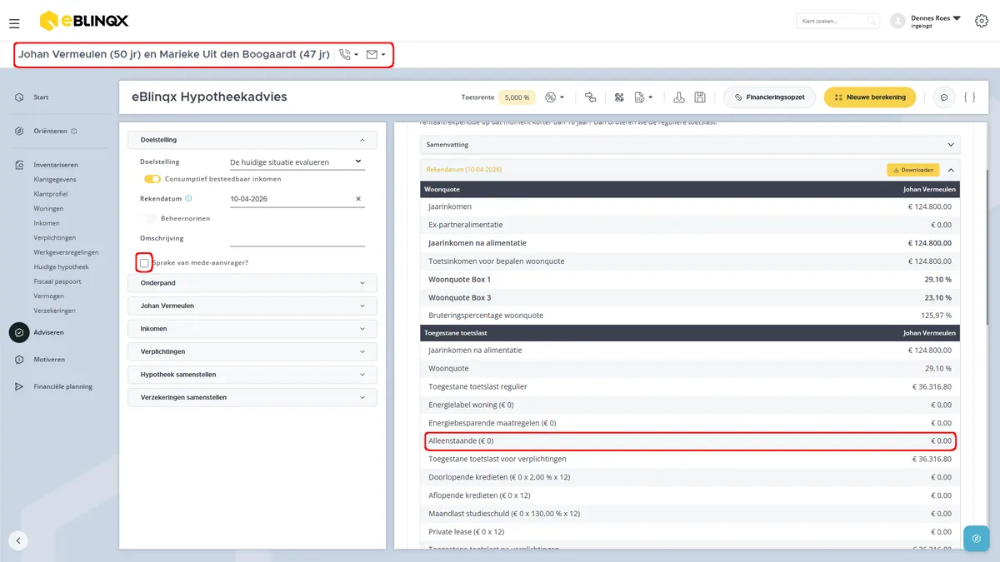
🐞 IT-30342: Alleenstaande verruiming nu altijd correct toegepast
De verruiming voor alleenstaanden wordt nu automatisch gebaseerd op het daadwerkelijke aantal personen in het dossier, in plaats van alleen op de checkbox. Hierdoor sluit de berekening altijd beter aan op de echte situatie van je klant, ook als de checkbox anders staat ingesteld. Zo kun je vertrouwen op een nauwkeuriger en consistenter advies zonder extra controlewerk.
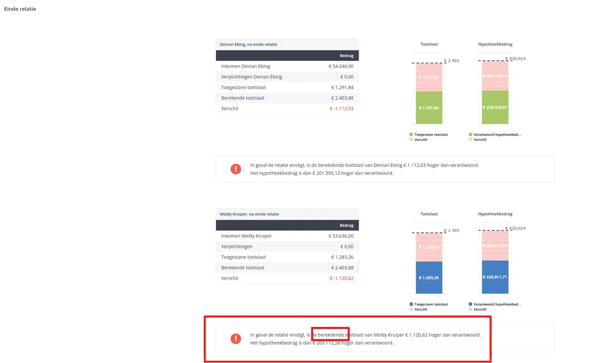
🐞 IT-30374: Tekstcorrectie bij Einde relatie
Bij het thema Einde relatie binnen advies op basis van de gedragscode is een tekstcorrectie doorgevoerd. Hierdoor wordt de informatie nu correct weergegeven, wat zorgt voor een nog nettere en prettigere gebruikerservaring tijdens jouw adviesproces.
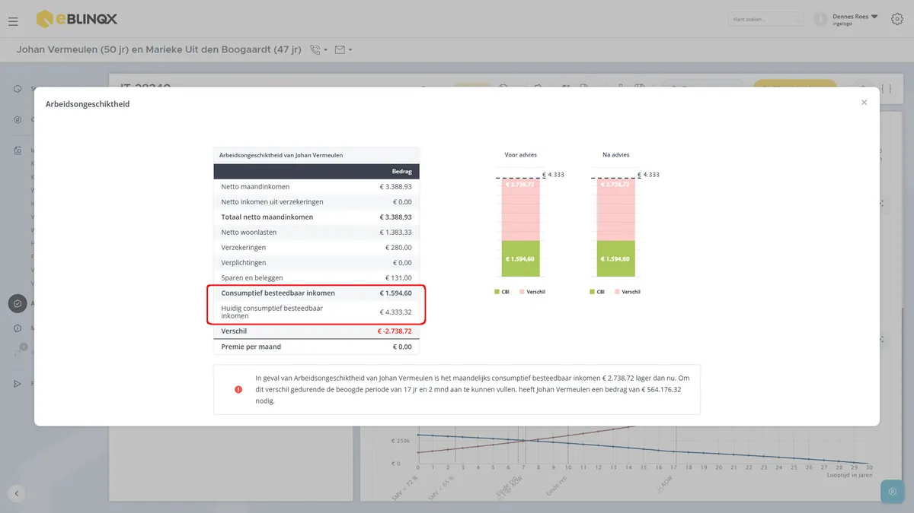
⚙️ IT-30369: Duidelijkere benaming voor besteedbaar inkomen
In het scherm Wonen is de benaming aangepast naar Toekomstig besteedbaar inkomen. Hierdoor sluit de terminologie nog beter aan op jouw adviesproces en begrijp je sneller wat er bedoeld wordt tijdens het werken in de software.
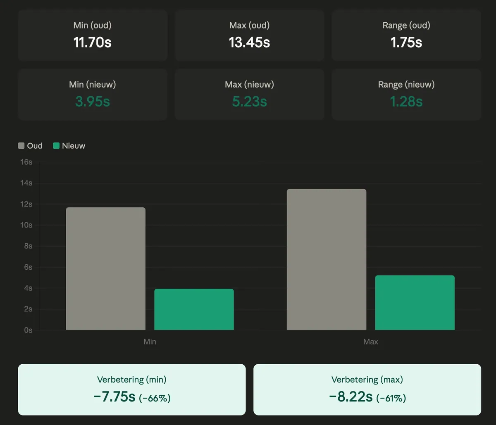
⚙️ IT-30348: Snellere generatie van adviesrapporten (PDF)
Het genereren van PDF-rapporten is geoptimaliseerd, waardoor jouw adviesrapporten merkbaar sneller beschikbaar zijn. Je profiteert van kortere wachttijden zonder dat er iets verandert aan de vertrouwde opmaak en kwaliteit van de rapporten. Zo kun je efficiënter werken en sneller schakelen richting jouw klant
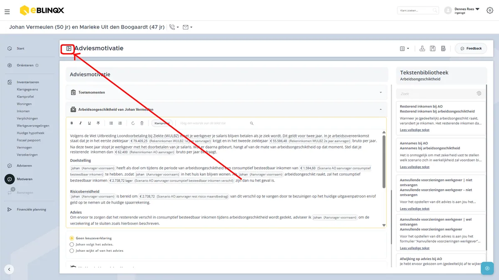
⚙️ IT-30202: Ruimere en stabielere werkomgeving voor adviesmotivatie
Je krijgt nu meer ruimte om jouw adviesmotivatie comfortabel op te stellen en te bewerken. Door de ruimere invoerweergave werk je overzichtelijker aan langere teksten en houd je altijd goed zicht op het onderdeel waar je bezig bent. Daarnaast voelt het invoerveld veel stabieler aan, zodat je prettiger en met meer focus kunt motiveren.
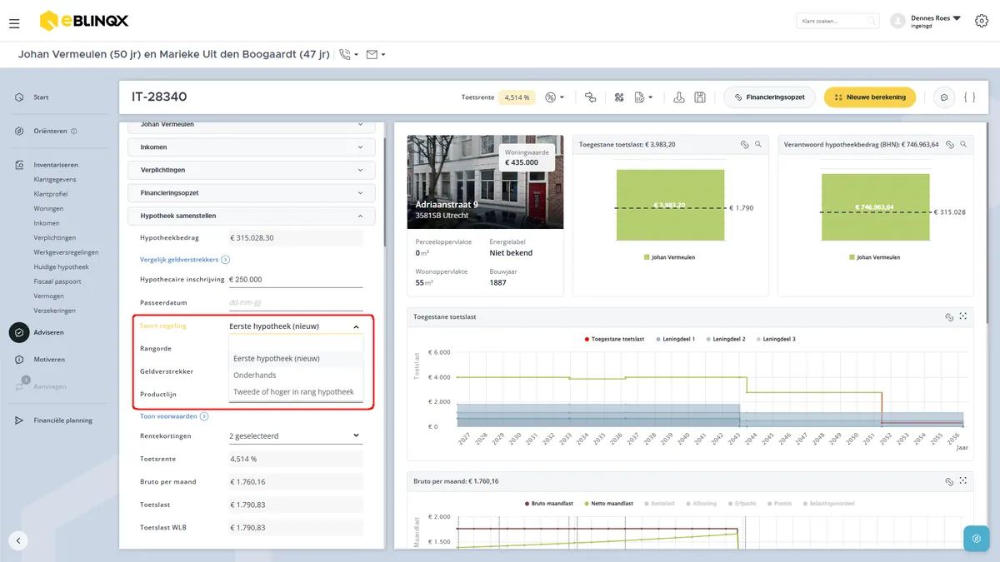
⚙️ IT-28340: Slimmer en uitgebreider kiezen van ‘Soort regeling’ bij ontslag hoofdelijke aansprakelijkheid
Het proces voor ontslag uit hoofdelijke aansprakelijkheid is verbeterd met een uitgebreid en slimmer dropdownmenu voor ‘Soort regeling’. Je krijgt nu automatisch de juiste opties en prefill op basis van de geldverstrekker en jouw financieringsopzet. Hierdoor werk je sneller, maak je minder kans op fouten in de HDN-aanlevering en weet je zeker dat de juiste rangorde en gegevens direct goed worden meegestuurd.
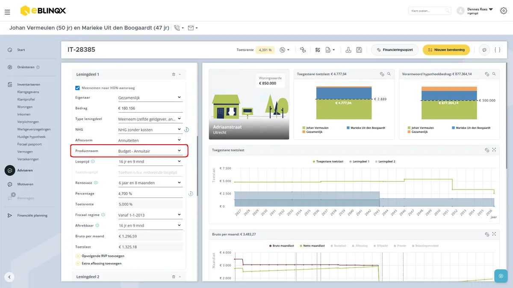
🐞 IT-28385: Productnamen bij leningdelen blijven nu correct bewaard
Productnamen die je invult bij bestaande leningdelen in de hypotheekconstructie worden nu ook blijvend opgeslagen. Ze blijven zichtbaar tijdens het werken in de berekening, ook na scrollen, en worden bij het opnieuw openen van het dossier weer correct geladen. Zo hoef je gegevens niet opnieuw in te voeren en werk je sneller en met meer vertrouwen aan een compleet en correct advies.
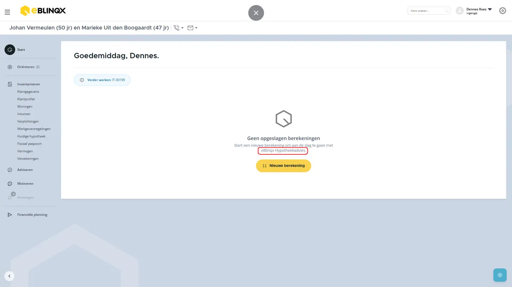
⚙️ IT-30368: Verbeterde productbenaming in startscherm
De ondertitel op het startscherm is geüpdatet zodat deze nu volledig aansluit bij eBlinqx Hypotheekadvies. Hierdoor werk je altijd met de juiste en meest actuele productnaam binnen jouw adviesomgeving.
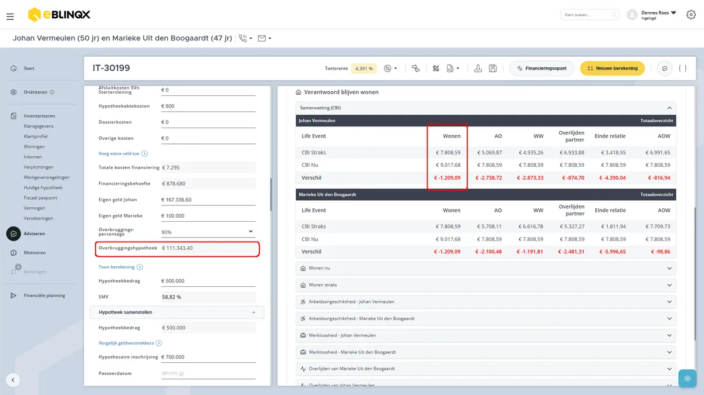
🐞 IT-30364: Gelijke netto woonlasten bij eigen geld en overbrugging
De berekening van de netto woonlasten is nu volledig consistent wanneer je kiest tussen eigen geld inbrengen of financieren via een overbruggingshypotheek. Hierdoor zie je in beide situaties dezelfde uitkomst wanneer de overbrugging niet als woonlast wordt meegenomen. Dit geeft jou duidelijkheid en zorgt ervoor dat je jouw klant altijd een eenduidig en betrouwbaar beeld van de maandlasten kunt presenteren.
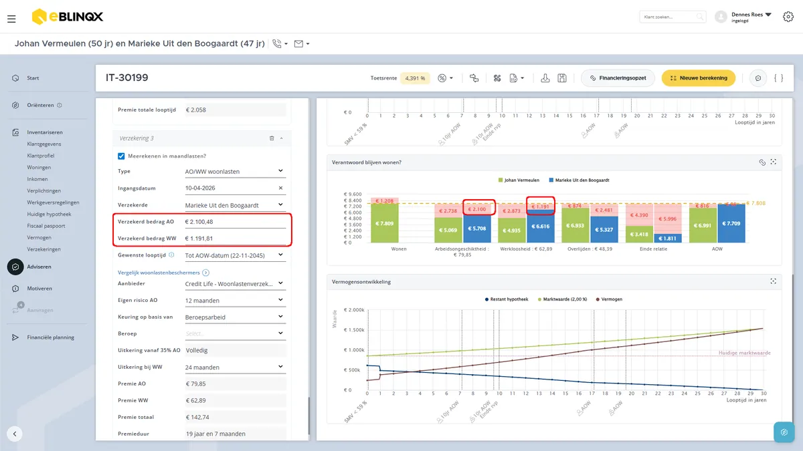
🐞 IT-30199: Consistente weergave van verzekerde bedragen bij risicoanalyse
Je ziet nu overal dezelfde, kloppende bedragen voor arbeidsongeschiktheid en werkloosheid. De sidebar sluit volledig aan op de grafieken en financiële analyse, zodat je sneller en met meer vertrouwen je advies kunt onderbouwen.
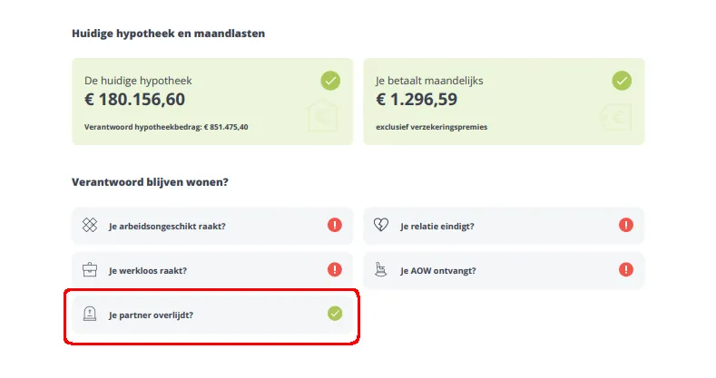
🐞 IT-28384: Consistente beoordeling van Overlijden in adviessamenvatting
De statusindicator bij Overlijden in de adviessamenvatting sluit nu volledig aan op de berekening in de verdiepende overlijdensanalyse. Daarbij wordt bestaande ORV-dekking ook correct meegenomen in de beoordeling. Zo zie jij voortaan overal dezelfde uitkomst terug en kun je met nog meer vertrouwen jouw advies en rapportage bespreken met de klant.
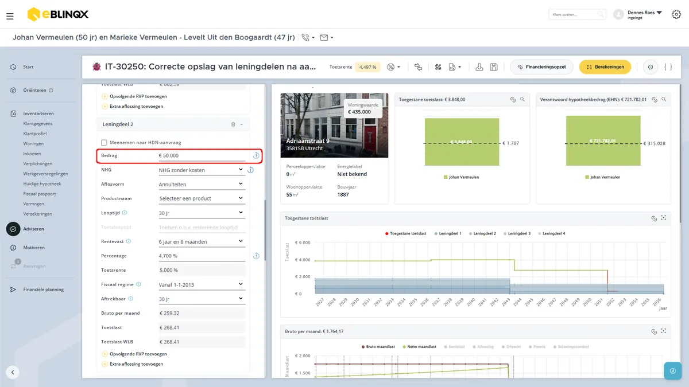
🐞 IT-30250: Correcte opslag van leningdelen na aanpassen berekening
Pas je leningdelen aan binnen de doelstelling ‘Ontslag uit hoofdelijke aansprakelijkheid’, dan blijven jouw wijzigingen in de automatisch afgesplitste leningdelen nu volledig bewaard — ook wanneer je de berekening later opnieuw opent. Zo blijft jouw invoer betrouwbaar zichtbaar en voorkom je dat bedragen onverwacht veranderen.
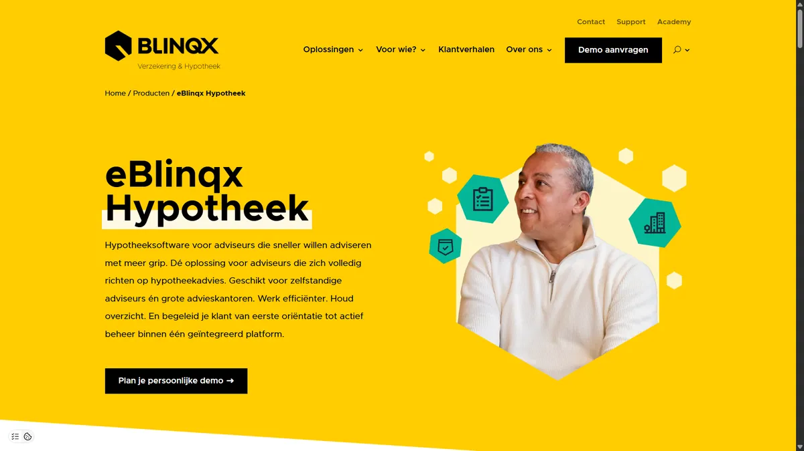
⚙️ IT-30177: Consistente rebranding naar eBlinqx Hypotheekadvies
Je werkt nu overal in de applicatie met de nieuwe naam eBlinqx Hypotheekadvies, waardoor alles weer volledig aansluit op de actuele branding. Dit zorgt voor een herkenbare en professionele uitstraling in zowel je werkomgeving als je klantcommunicatie, zonder dat je iets hoeft aan te passen in je werkwijze.
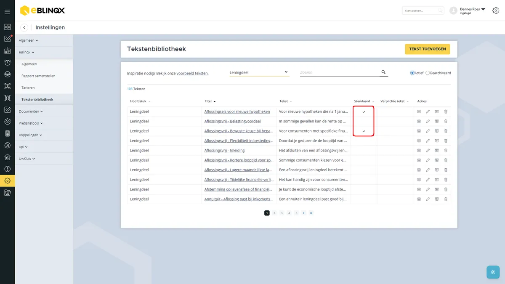
🐞 IT-30031: Standaardteksten weer correct zichtbaar en bruikbaar
Standaardteksten worden nu weer correct weergegeven in de adviesmotivatie, zodat je hier direct op kunt vertrouwen in je dossieropbouw. Daarnaast is het makkelijker geworden om met meerdere standaardteksten te werken, waardoor je jouw motivatie sneller en vollediger kunt samenstellen.
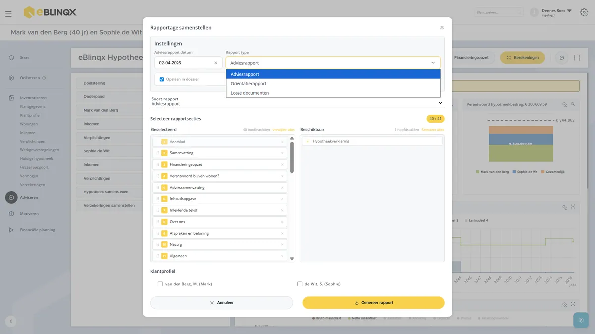
⚙️ IT-30219: Rapporttemplates logisch herverdeeld
We hebben de rapporttemplates slimmer ingedeeld over de verschillende rapporttypes. Daardoor vind je relevante documenten nu sneller terug onder de juiste categorie, zoals Oriëntatierapport en Losse documenten. Dit maakt het selecteren van het juiste rapport overzichtelijker en helpt je om efficiënter te werken.
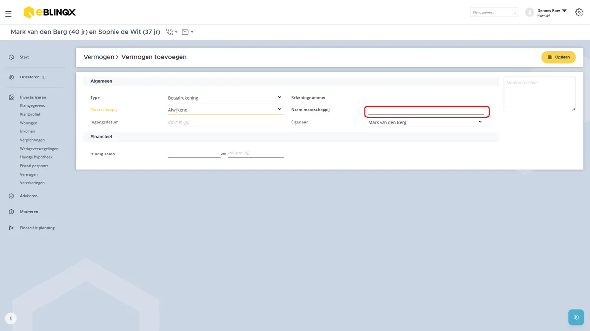
🆕 IT-30257: Eigen naam invoeren bij ‘Afwijkend’ aanbieder
Je kunt nu eenvoudig een eigen naam vastleggen wanneer je kiest voor ‘Afwijkend’ als maatschappij of aanbieder. Hierdoor leg je afwijkende situaties duidelijk en compleet vast in je dossier, terwijl alles netjes wordt opgeslagen voor later gebruik. Zo houd je maximale flexibiliteit én overzicht in je advies.
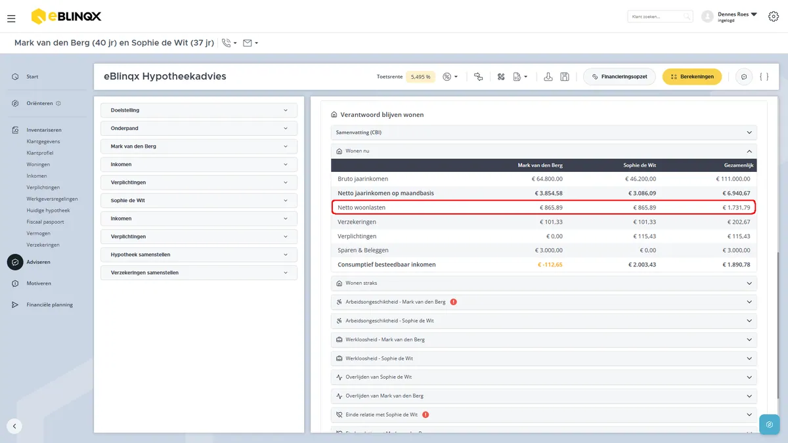
⚙️ IT-30258: Gelijkmatige verdeling van netto woonlasten bij Verantwoord blijven wonen
Bij advisering op basis van consumptief besteedbaar inkomen worden de netto woonlasten binnen Verantwoord blijven wonen nu nog consistenter weergegeven voor jou en je partner. Hierdoor sluiten de bedragen in Wonen Nu en Wonen Straks beter op elkaar aan en krijg je een duidelijker en betrouwbaarder inzicht in de financiële analyse.
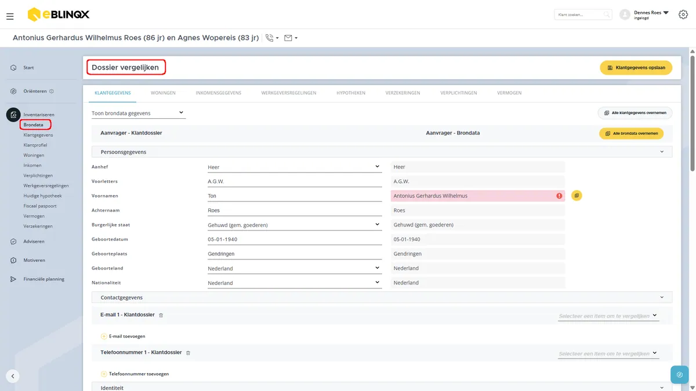
⚙️ IT-30012: Verbeterde verwerking en overname van brondata in eBlinqx Hypotheekadvies
De verwerking van brondata in eBlinqx Hypotheekadvies is verder verbeterd op basis van waardevolle feedback, zodat je gegevens completer en consistenter worden overgenomen. Je profiteert van een soepelere data-overname (zoals NAW-gegevens en meerdere woningen), beter inzicht in beschikbare informatie en een stabielere datamapping. Dit helpt je om sneller met betrouwbare klantdata te werken en jouw adviesproces efficiënter in te richten.
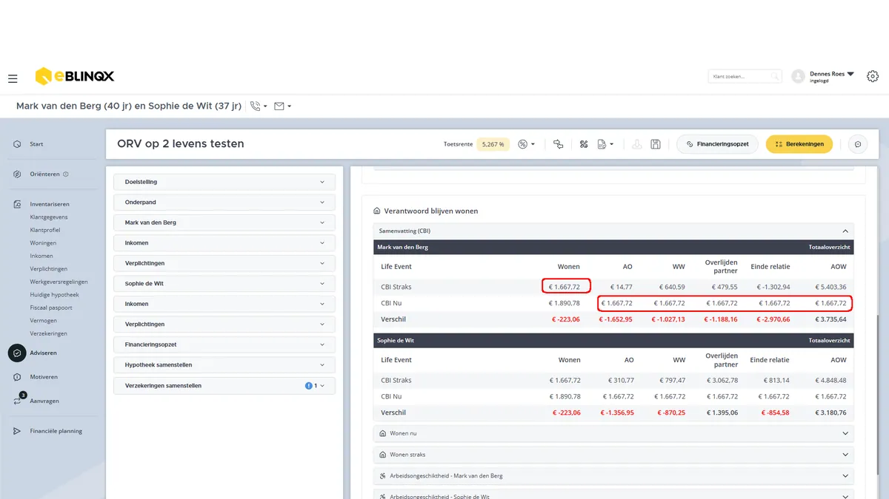
🐞 IT-30200: Juiste woonlasten en CBI zonder overbruggingshypotheek in Life Events
Binnen Life Events en het thema Wonen worden de netto woonlasten en het consumptief besteedbaar inkomen nu correct berekend zonder de tijdelijke overbruggingshypotheek. Hierdoor krijg je een realistischer en zuiver beeld van de structurele financiële situatie van je klant, zodat je jouw advies nog beter kunt onderbouwen en toelichten.
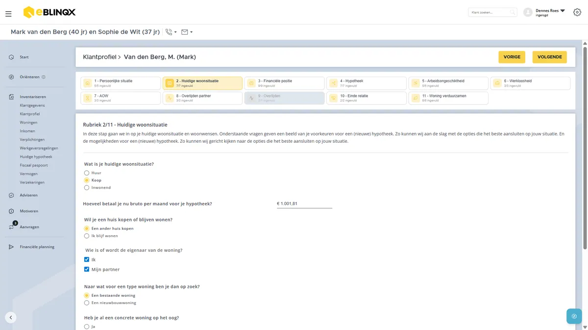
⚙️ IT-28541: Flexibeler klantprofiel met slimme volledigheidsindicatie
Je krijgt nu veel meer vrijheid bij het invullen van het klantprofiel, omdat verplichte velden (behalve Persoonlijke situatie) zijn losgelaten. Zo kun je sneller doorwerken zonder onnodige invoer, terwijl je data schoon en betrouwbaar blijft. Tegelijk zie je met een duidelijke, niet-blokkerende indicator hoeveel velden je al hebt ingevuld, zodat je eenvoudig overzicht houdt en je profiel stap voor stap compleet kunt maken.
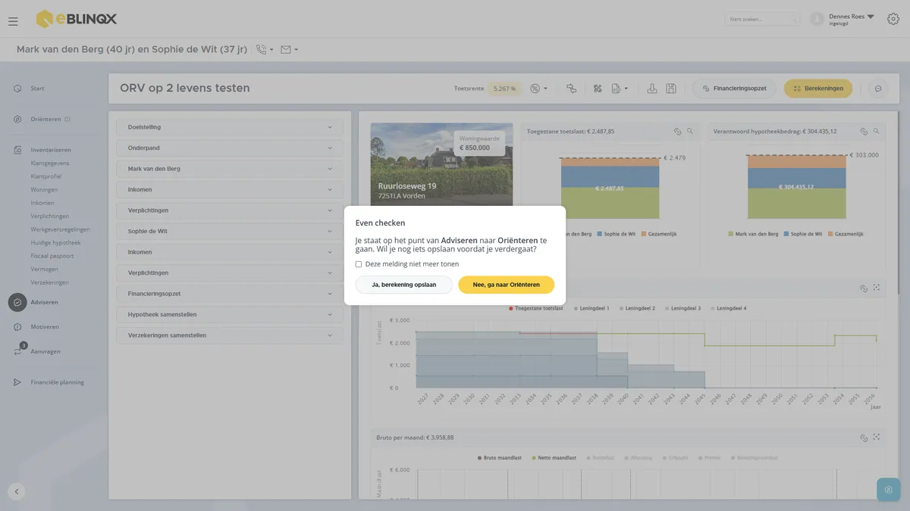
⚙️ IT-30188: Duidelijkere melding bij wisselen tussen procesfases
Wanneer je wisselt tussen Oriënteren en Adviseren, krijg je nu een duidelijkere en vriendelijkere melding te zien. De tekst sluit beter aan op wat je daadwerkelijk doet, gebruikt de juiste procesfase en herinnert je op een prettige manier om eventueel nog iets op te slaan. Zo werk je met meer duidelijkheid en vertrouwen verder in jouw workflow.
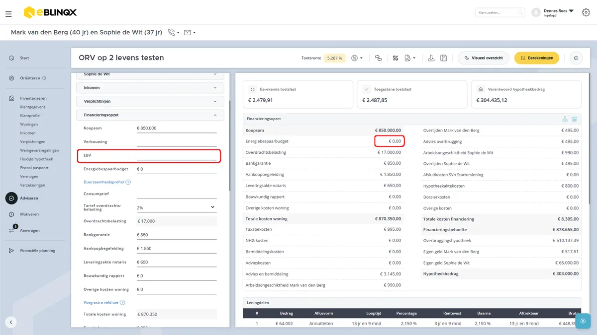
🐞 IT-30045: Automatisch Energiebespaarbudget respecteert nu jouw kantoorinstellingen
Wanneer binnen jouw kantoor de optie ‘Automatisch Energiebespaarbudget (EBB) prefillen’ uitstaat, vult eBlinqx Hypotheekadvies het Energiebespaarbudget niet langer automatisch in op basis van het energielabel van de woning. Hierdoor blijft jouw berekening volledig in lijn met de instellingen van jouw kantoor en houd je zelf de regie over het invullen van het EBB.
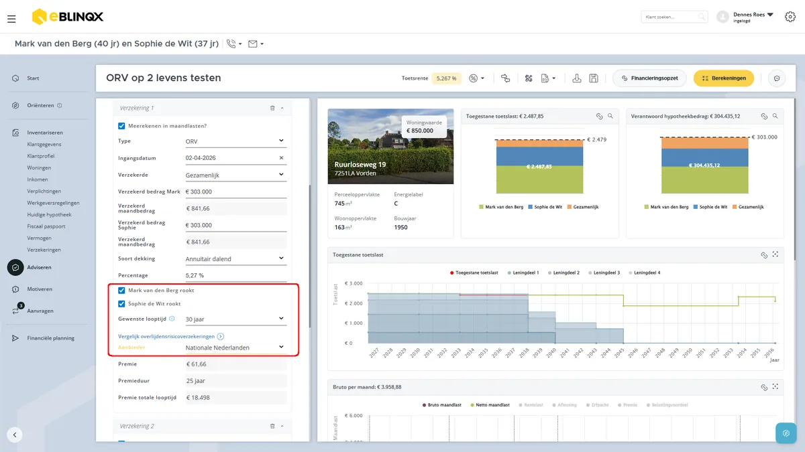
🐞 IT-23419: Correcte ORV-premie bij rookstatus van beide verzekerden
Bij een ORV op twee levens wordt de premie nu ook direct opnieuw opgehaald en vernieuwd zodra je de rookstatus van de tweede verzekerde aanpast. Zo zie je altijd meteen een premie die volledig aansluit op de actuele situatie van beide verzekerden, waardoor je sneller en met extra vertrouwen verder kunt adviseren.